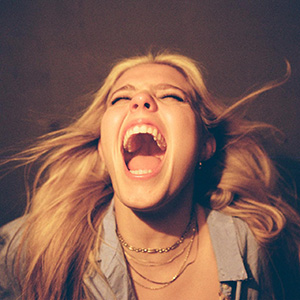
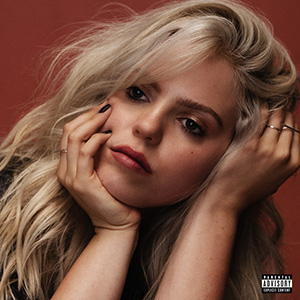
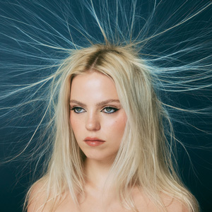

Photo by EvaSei6, CC BY-SA 4.0, via Wikimedia Commons
Renneé Rapp is a 23-year-old American actress and singer who has recently been met with significant acclaim over the release of her first two studio albums. Hailing from a small town in North Carolina, Rapp initially broke into the industry after playing the part of Regina George in the Broadway musical adaptation of Mean Girls from 2019 to 2020. Afterward, Rapp's career continued to flourish as she took on the role of Leighton Murray in Mindy Kaling's Max comedy series, The Sex Lives of College Girls in 2021.
In April of 2022, she released her debut single, "Tattoos," quickly followed by her debut EP, Everything to Everyone, in November 2022. After the success of these first few releases, in August of 2023, Rapp released her first full-length studio album, Snow Angel. With pop and indie influences, Rapp’s music can be characterized by her vulnerable lyrics and powerful vocals. Only a few years into her career, Rapp has sold-out tours and international performances, and she has recently announced her return as Regina George in the film adaptation of Mean Girls, which is set to release on January 12, 2024.
  {kind=link}